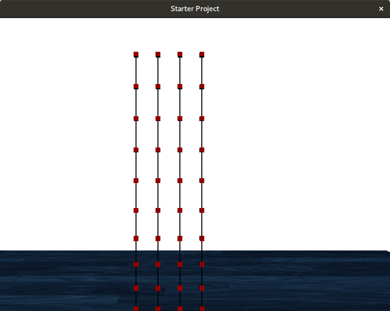
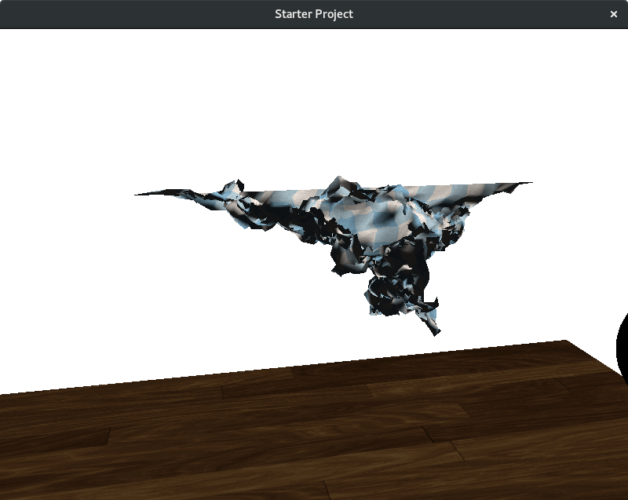

Mass Spring Simulations
Description
This project is a cloth simulation using a mass-spring system. This means that we represent the cloth as a grid of weighted nodes, connected to each other by springs. Each frame, the force on each spring is calculated and applied to the two nodes at the end of every spring. The new position and velocity of each node is found through Eulerian integration. The end result is a believable looking cloth.
Difficulties
I had a few difficulties in this assignment. The first was how delicate spring systems can be. If you accidentally had one minus sign wrong, or some other thing just slightly wrong, it would explode. I ended up changing all of my floats to doubles, and it blew up a lot less. The main two problems I had were silly mistakes. The sphere I loaded in from blender didn't have its vertices centered at the origin, so I thought I had a rendering bug for a long time. Similarly, when I was testing drag, a vertically falling cloth shouldn't slow down with drag, but mine was. Turns out that it wasn't slowing down from drag, it was just my frame rate lowering from the drag calculations, making the cloth look slower.
Code
Download zip file of codeLink to Github
Features
- Realtime rendering
- 3D mass-spring simulation and rendering
- 3D user controlled camera
- Real-time user interaction with system (see controls)
- Cloth-sphere interaction
- 100x100 cloth at 30+ FPS
- Eulerian intergration
- Textured cloth rendering
- Thread-parallel implementation
- Wind component
- Air resistance / drag
Controls
- W,A,S,D: Move the camera forward, backwards, left, and right
- Mouse: Rotate the camera
- I,K: Increase / decrease the spring constant KS
- J,L: Decrease / increase the spring dampening constant KD
- P: Pause the simulation
- Arrow Keys: Move the ball around in the XZ plane
- C: Change visualization from wireframe to textured
- Z: Turn wind on/off
- X: Turn anchors on/off
- Space: Turn drag on / off
- H: Reset the simulation horizontally
- V: Reset the simulation vertically
Tools Used
- OpenGL for the rendering
- SDL2 for the window management and user interaction
- GLM for the vectors and matrices
Thread Parallel Performance
I used OpenMP on most of the major for loops for my spring simulation. This included calculating the drag and spring forces, updating the positions, velocities, and normals. I tested having OpenMP vs No OpenMP on a 50x50 cloth, and about a 2x speed up as seen in the graph below.

Videos
Images:
Cloth landing ontop of the ball

Cloth in the wind, slightly hitting the sphere behind it
Artistic Submissions:
Accidentally spawned the sphere in the cloth

This is what happens when I make the dampening constant just slightly too high